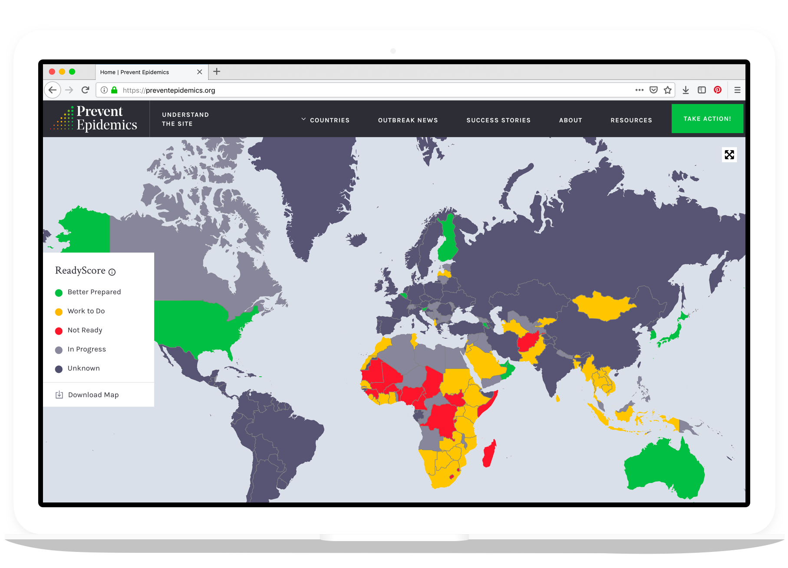

Make the world safer from epidemics with advocacy and action
The world is not ready for the next epidemic. Nearly 5 billion people are vulnerable to the next health threat because they live in countries that have not rigorously assessed their ability to find, stop, and prevent diseases. Those countries that have done an assessment have many gaps to fill.
Our approach
We’re committed to helping countries identify gaps in their preparedness and fill them, and to improving global policies and systems that protect the world from the next epidemic. We work locally and globally — engaging directly with ministers of health and in-country civil society groups, to steering global health security conversations at the White House and World Health Organization.
By working across the spectrum, our small team accelerates progress to make the world safer from the next epidemic.
What we're doing
We provide technical, political and financial support to countries facing bottlenecks on their path to preparedness. This could mean helping a country develop their National Action Plan for Health Security, providing a one-time catalytic grant to address a preparedness gap, or identifying a legal framework to support preparedness legislation. We’re flexible and fast.
Technical
We provide technical support to advance progress around WHO’s Joint External Evaluation.
Political
We help garner political support for preparedness, like establishing dedicated agencies for disease prevention.
Financial
We provide catalytic grants that can build long-term preparedness capacity and help with emergencies.
{kind=link}